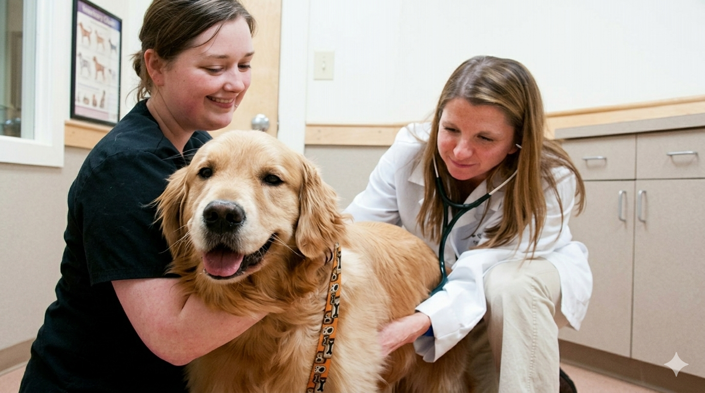
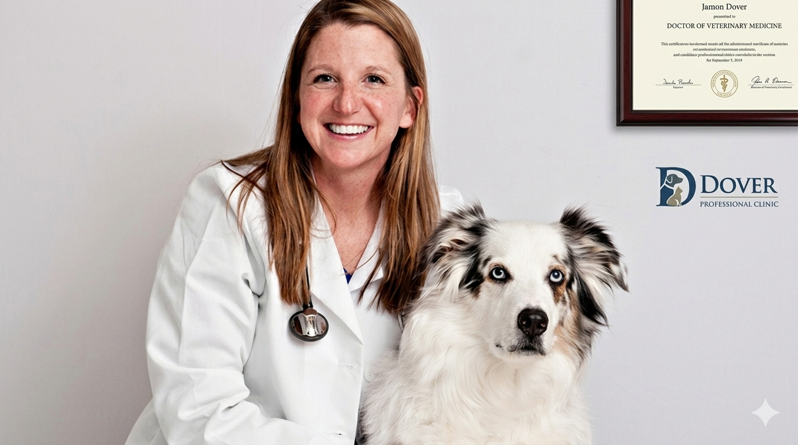
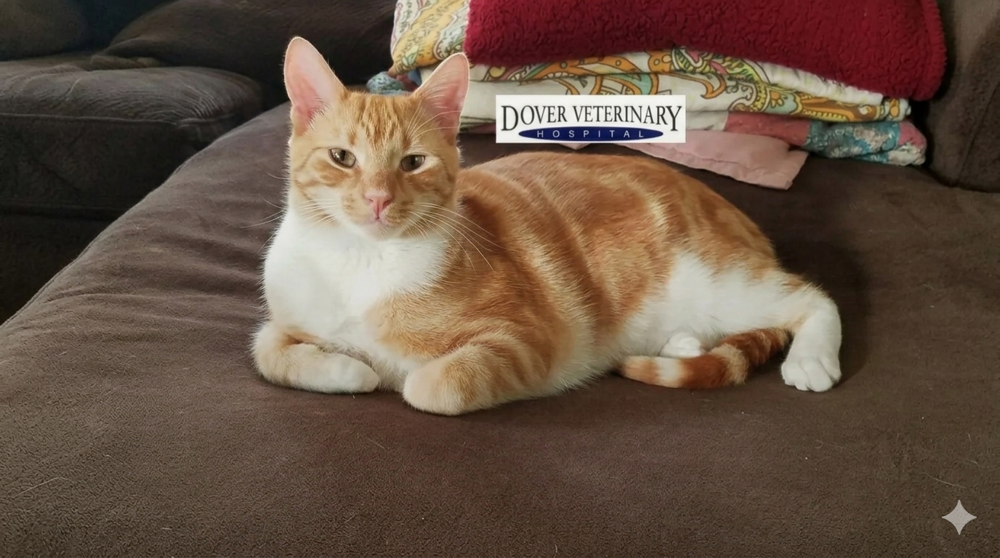
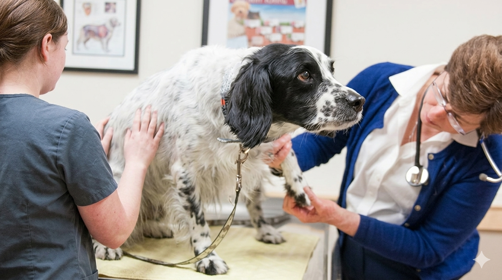

Our Services
Dover New Hampshire Veterinary Hospital
Regular wellness exams are the cornerstone of preventive veterinary care.
Vaccination is one of the most effective tools we have for preventing serious infectious disease in companion animals.
Parasites pose year-round risks to pets and, in some cases, to human family members as well.
Nutrition is foundational to your pet's health, energy, immune function, weight, and longevity.
Behavior problems are among the most common reasons pets are surrendered to shelters, yet many are highly treatable with the right guidance.
A microchip is the single most reliable form of permanent identification for your pet.
Digital radiography is one of the most valuable diagnostic tools in veterinary medicine, providing detailed images of bones, joints, the chest cavity, and abdominal organs with minimal patient stress.
Rapid, accurate laboratory results are essential for effective diagnosis and treatment.
Ultrasound imaging allows our veterinarians to visualize soft tissue structures in real time - without radiation and without requiring anesthesia in most cases.
DNA-based genetic lab testing has transformed our understanding of breed composition and hereditary health in companion animals.
Our surgical suite is equipped to safely perform a wide range of soft tissue and orthopedic procedures.
Safe anesthesia and effective pain management are priorities in every procedure we perform.
Dental disease is the most common health condition in adult dogs and cats, yet it is frequently overlooked until it becomes advanced and painful.
A cancer diagnosis in a beloved pet is one of the most difficult things a family can face.
Holistic veterinary medicine considers the whole patient - body, mind, and environment - rather than treating symptoms in isolation.
Veterinary acupuncture is an ancient therapeutic modality with a growing body of modern scientific evidence supporting its effectiveness for pain management, neurological conditions, and overall wellness.
Saying goodbye to a beloved companion is one of life's most profound losses.
Our in-house pharmacy offers the convenience of filling your pet's prescriptions at the time of your visit - no additional trips, no waiting for mail delivery, no uncertainty about medication authenticity.
Managing ongoing medications for a pet with a chronic condition should be as simple as possible.
We warmly welcome new clients and their companion animals to our practice.
Pet psychology, often referred to as applied animal behavior, studies how companion animals think, learn, and feel.